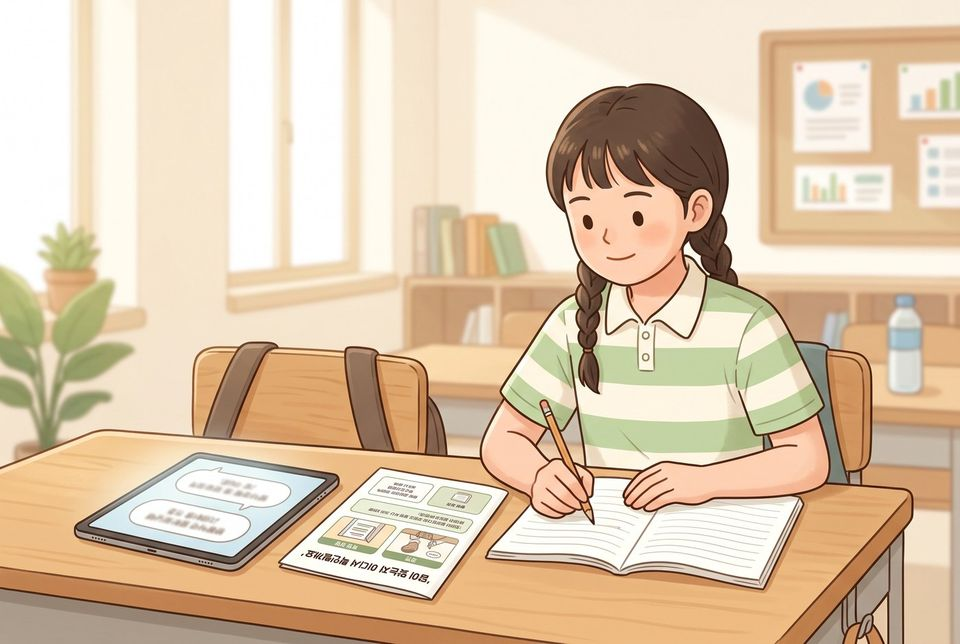
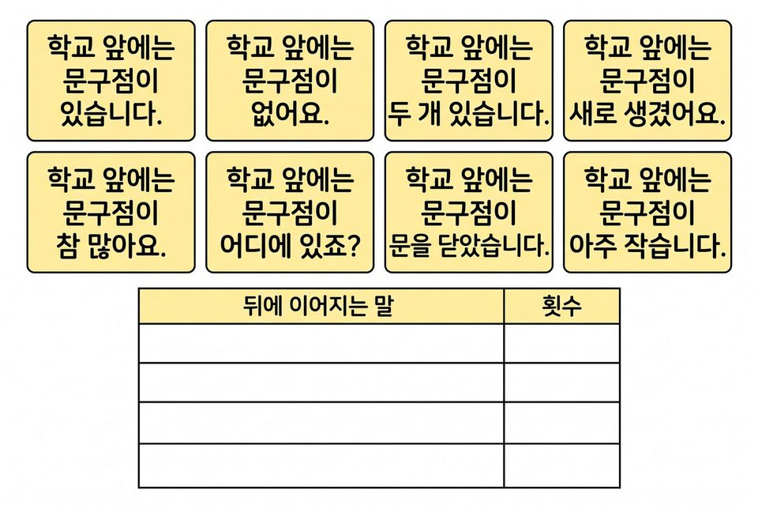
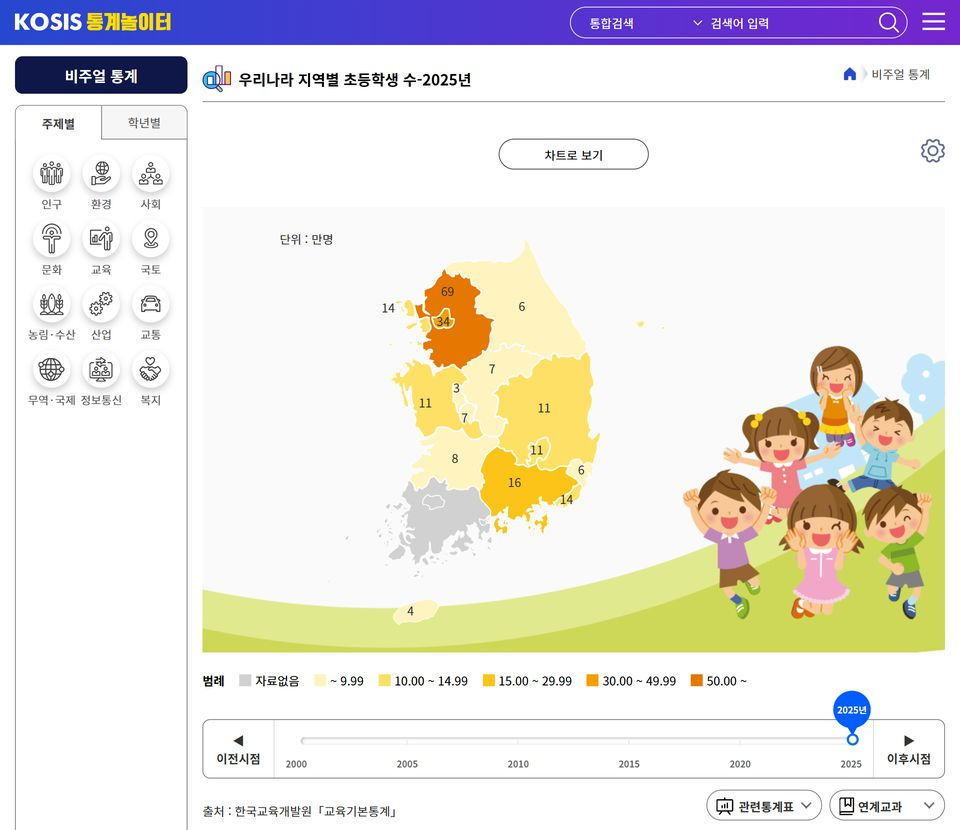
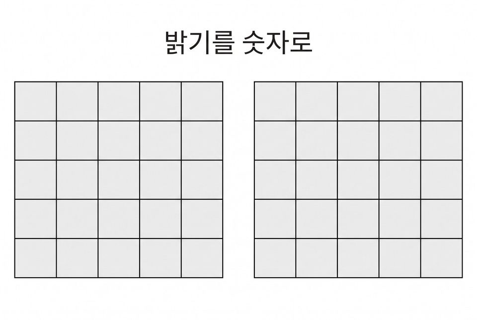

챗봇이 말한 주장을 공식 통계로 확인하고 좋은 질문 설계하기
학습 문제 — 챗봇이 말한 주장을 공식 통계로 확인하고, 더 좋은 답을 얻는 질문을 설계해 봅시다.
개요
| 성취기준 | [6실인공지능02-01] 대화형 인공지능을 체험하며 말과 글이 처리되는 단계를 설명하고, 챗봇의 답을 근거 자료로 확인한다. 연계 성취기준: [6실05-04] |
|---|---|
| 핵심 역량 | 지식정보처리 역량, 공동체 역량 |
| 핵심 기능 | ① 데이터 간에 공통되는 유형이나 형태 탐색하기 ② 앞말 다음에 올 가능성이 높은 말을 골라 잇는 과정 살펴보기 ③ 챗봇이 말한 주장을 공식 통계에서 찾아 맞음·다름·판단 보류로 기록하기 ④ 묻는 방식에 따른 답의 차이를 견주어 질문 카드 만들기 ⑤ 말과 그림이 숫자로 바뀌는 과정 맛보기(17~18차시 예고) |
| 가치 태도 | 인공지능이 사회에 미치는 영향을 파악하는 자세 챗봇의 답을 다른 자료로 확인해 보려는 자세 |
교수학습 활동
9차시 도입 동기 유발 · 학습문제 제시9차시 전개 활동1. 다음 말 표로 문장 만들기 · 활동2. 우리아이AI에게 묻고 비주얼 통계로 검증하기10차시 전개 활동3. 세 가지로 묻고 좋은 질문 카드 만들기 · 활동4. 맛보기: 말과 그림이 숫자로 바뀐다10차시 정리 배운 내용 정리 및 의뢰 해결 보고 · 다음 의뢰 예고
9차시도입8분
동기 유발
- 사람과 말을 주고받는 프로그램을 써 본 일 말하기
- 그 프로그램의 답이 이상했던 때를 떠올려 이야기하기
- 교감 선생님의 의뢰 듣기: 학교 안내 챗봇이 말하는 내용 확인하고 좋은 질문 모으기
- 오늘 미션: 챗봇 팩트체크 탐정 되기

학습문제 제시
- 챗봇이 말한 주장을 공식 통계로 확인하고, 더 좋은 답을 얻는 질문을 설계해 봅시다.
준비물필기구
자료챗봇 확인 활동지, [도입] 상황 그림
유의점챗봇이 ‘안다’, ‘생각한다’고 말하지 않고, 사실과 다른 답을 내놓기도 한다고 알려 준다.
유의점활동지 배부 시간을 도입 시간에 포함한다.
9차시전개32분
활동1. 다음 말 표로 문장 만들기 (8분)
- 예문 카드 여덟 장을 보고 ‘다음 말 표’에 뒤에 온 말과 횟수 적기
- ‘학교 앞에는’에서 시작해 가장 많이 나온 말을 붙이고, 같으면 주사위로 고르기
- 만든 문장(예: ‘학교 앞에는 문구점이 있습니다’)을 실제 우리 학교 앞과 견주기
- 챗봇도 앞말 다음에 올 가능성이 높은 말을 이어 붙여 답함을 알기
- 그럴듯해도 사실과 다를 수 있어 확인이 필요함을 알기

활동2. 우리아이AI에게 묻고 비주얼 통계로 검증하기 (24분)
- 약속 정하기: 이름·학교·주소·연락처·가족 이야기 쓰지 않기
- 짝이 우리아이AI(wooriai.use.go.kr)에 묻기
- 예: “우리나라 지역별 초등학생 수를 2025년 기준으로 알려주세요”
- 답 첫머리의 ‘틀릴 수 있으니 팩트체크하라’는 안내 찾아 표시하기
- 답에서 확인할 주장 세 개 골라 적기(예: 경기도가 가장 많다)
- KOSIS 통계놀이터 비주얼 통계 ‘우리나라 지역별 초등학생 수’ 열기
- 주장마다 맞음·다름·판단 보류 가운데 하나 표시하기
- 학생 수만으로 알 수 없는 주장(비율 등)은 판단 보류와 까닭 쓰기
- 근거 카드에 통계 이름·수치와 단위·기준 연도·조회 날짜 적기
- 다름·보류 주장을 근거 카드와 함께 학급 팩트체크 판에 붙이기

준비물필기구, 모둠 기기, 주사위
자료예문 카드·다음 말 표, 우리 학교 앞 사진, 근거 카드, 학급 팩트체크 판, 통계 자료표
유의점챗봇은 많이 나온 말을 베끼지 않고, 앞말 다음에 올 가능성이 높은 말을 고른다.
유의점우리아이AI는 울산교육청의 학생용 생성형 AI로 로그인 없이 쓰며, 학교에서 접속되는지 수업 전에 확인한다.
유의점개인정보는 입력하지 않고 학생 계정은 만들지 않는다.
유의점우리아이AI는 정확한 수치 대신 순위·경향을 말할 수 있으므로, 수치가 아닌 주장 단위로 확인하게 한다.
유의점비주얼 통계를 먼저 찾고, 없으면 교사가 받아 둔 통계 자료표에서 찾는다.
유의점느린 학습자에게는 질문 예시·메뉴 차례 도움 카드를 주고, 빠른 학습자에게는 되물은 답의 출처도 확인하게 한다.
10차시전개33분
활동3. 세 가지로 묻고 좋은 질문 카드 만들기 (25분)
- 우리아이AI에 쓰레기 버리는 방법을 짧게 한 번 묻기
- 세 문장으로 알려 달라고 조건을 붙여 다시 묻기
- 교실에서 나오는 쓰레기를 예로 들어 달라고 묻기
- 세 답의 문장 수와 어려운 낱말 수, 예가 있는지 적기
- 내가 쓰기에 나은 답과 그 까닭 쓰기
- 그 답을 얻은 묻는 방법을 좋은 질문 카드로 만들기
- 모둠 질문 카드 하나를 우리아이AI에 넣어 답 견주기
- 도전: 우리 학교 안내 챗봇에게 할 질문 카드 한 장 더 만들기
활동4. 맛보기: 말과 그림이 숫자로 바뀐다 (8분)
- 챗봇에 넣은 질문 글자도 숫자로 바뀌어 처리됨을 듣기
- 다섯 칸 격자 그림을 0~9 밝기 숫자로 바꾼 도해 함께 읽기

- 17~18차시에 소리·그림을 직접 숫자로 바꾸어 볼 것 알기
준비물필기구
자료좋은 질문 카드 양식, 그림을 숫자로 바꾸는 도해, 우리아이AI
유의점묻는 방식만 바꾸고 주제는 학급 전체가 같게 한다.
유의점숫자 바꾸기는 17~18차시에 직접 해 보므로 여기서는 도해로 짧게 보여 준다.
유의점느린 학습자에게는 조건 붙이기 예시 카드를 준다.
10차시정리7분
배운 내용 정리 및 의뢰 해결 보고 (5분)
- 좋은 질문 카드를 모둠끼리 바꾸어 읽고 가장 쓸모 있는 카드에 별 스티커 붙이기
- 별을 받은 카드를 종이컵 질문함에 넣어 교감 선생님께 드릴 묶음 만들기
- 챗봇이 하는 일을 오늘 배운 말로 한 문장 쓰기
- 공식 통계와 달랐던 주장 하나와 챗봇에 쓰지 않을 것 두 가지 적기
다음 의뢰 예고 (2분)
- 학생자치회의 의뢰 알기: 규칙 로봇이 되어 도우미가 따를 규칙표 시험하기
- 활동지를 정리해 제출하기
자료좋은 질문 카드, 별 스티커, 종이컵 질문함
유의점기준 문장을 그대로 옮겨 쓴 학생에게는 오늘 겪은 사례를 하나 말하게 한다.
유의점쓰기가 어려운 학생은 말로 확인하고 도운 사실을 적는다.
유의점결석·미제출 학생은 따로 적고 보충 확인 시점을 정한다.
평가 계획
인공지능 소양 · 챗봇 답의 근거 확인과 질문 설계
챗봇이 말한 주장을 공식 통계와 대조해 근거를 기록하고, 묻는 방식을 견주어 더 좋은 답을 얻는 질문 카드를 만들 수 있는가?
| 수준 | 평가 기준 |
|---|---|
| 매우 잘함 | 챗봇이 말한 세 주장을 공식 통계에서 찾아 통계 이름·수치·기준 연도·조회 날짜를 근거 카드에 적고, 맞음·다름·판단 보류와 그 까닭을 쓴다. 묻는 방식 세 가지의 답 차이를 견주어 까닭이 드러나는 질문 카드를 만든다. |
| 잘함 | 세 주장을 공식 통계에서 찾아 근거 카드에 출처와 수치를 적고 맞음·다름을 표시한다. 답의 차이를 한 가지 이상 적어 질문 카드를 만든다. |
| 보통 | 근거 카드에 출처나 기준 연도가 빠졌거나 같고 다름만 표시하며, 질문 카드가 덜 완성되었다. |
| 노력요함 | 교사가 도움 카드로 검색 차례를 짚어 주고 기록 항목을 하나씩 안내한 뒤에도 챗봇 답을 공식 통계와 견주어 적거나 좋은 질문을 만드는 데 어려움이 있다. |
| 미관찰 | 결석이나 미제출, 기기 장애로 확인하지 못한 경우. 낮은 성취로 적지 않고 따로 기록한 뒤 보충 확인 시점을 정한다. |
평가 방법 활동지 분석 · 산출물(질문 카드) 분석 · 구술 확인 · 관찰
연동 도구·링크
과정안에 나오는 도구가 저절로 걸립니다. 수업 전에 학교망에서 열리는지, 블록·메뉴 이름이 바뀌지 않았는지 확인하세요.
KOSIS 통계놀이터 ↗어린이용 공식 통계, 근거 데이터 찾기계정: 필요 없음비주얼 통계 ↗KOSIS 통계놀이터 안내KOSIS 국가통계포털 ↗전국 통계와 우리 반 자료 견주기계정: 필요 없음우리아이AI ↗학생용 생성형 AI(로그인 없음) — 개인정보 입력 금지, 학교망 접속 사전 확인계정: 필요 없음비주얼 통계 — 지역별 초등학생 수 ↗활동2 주장 확인
내 수업 링크
학급 패들렛, 엔트리 작품, 활동지 주소처럼 이 차시에 쓸 링크를 걸어 둡니다. 이 브라우저에만 저장되고 밖으로 보내지 않습니다. 학생 이름이 든 주소는 넣지 마세요.